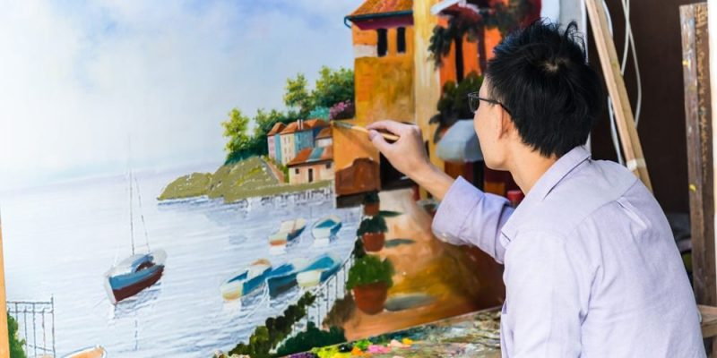
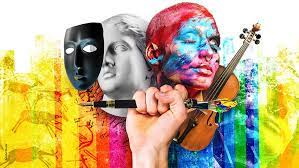

"EL ARTE COMO EXPRESIÓN"
En algunas ocasiones las palabras no son capaces de expresar lo que sentimos, es por eso que la manera mas fácil de sacar de nuestro interior, nuestro ser y nuestra alma es a través del arte, que es la forma más especial y sencilla de expresar todo lo que sentimos dentro de nuestro ser y queremos dar a conocer a los demás. El arte es plasmar en una creación artística lo que llevamos dentro haciendo una prolongación de nosotros mismos a través del él.
El arte como expresión es hoy en día la forma más fácil de expresarnos para mostrar nuestros sentimientos y pensamientos a los demás.
Se ha podido comprobar que una creación artística es capaz de mostrar la belleza de los pensamientos y llevarnos a lugares inimaginables e inalcanzables, es esa conexión entre el alma y nuestros sentidos puesto que las palabras en la mayoría de ocasiones no alcanzan a expresar las mas profundas emociones que llegamos a sentir los seres humanos, las palabras son cortas para todo lo que expresamos en la obra el arte, las palabras no alcanzan a mostrar de forma directa lo que el ser humano siente en su interior y las emociones que habitan en su alma y su ser, por ello el arte como expresión lo puede llegar a mostrar todo sin necesidad de decir una sola palabra.
Se puede considerar que el arte llega a ser un estimulo para la persona que lo observa porque pueden revivir vivencias, emociones, sensaciones, dolores, tristezas que las palabras no alcanzan a mostrar, a través de ello se puede descubrir lo que se quiere interpretar de todo ser humano que plasme una expresión a través de una forma artística, la gran mayoría del arte es capaz de atraer nuestra atención, es capaz de transportarnos a un mundo diferente , es capaz de hacer volar nuestra imaginación para creer que todo es posible, que todo es fácil, nos transporta a lugares mágicos donde quisiéramos estar y conocer sin necesidad de hacerlo de forma física.
Sin duda alguna, el arte no tiene límites, así como nuestra imaginación, pues no esta rodeada de barreras, podríamos decir que los seres humanos podemos llegar a sentir tanto y cambiar nuestro pensamiento a través del arte que podría devolvernos la salud, las ganas de vivir, las ganas de sentir, el arte nos puede transformar y hacernos seres humanos mas felices, llenos de alegría, llenos de ganas de vivir, el arte es capaz de volvernos personas con propósito de vida, con ganas de podernos expresar sin miedo hacer criticados en la sociedad en la que hoy vivimos la cual esta llena de personas insensibles y con pensamiento débil.
En síntesis, gracias al arte podemos ser mejores personas, podemos expresarnos libremente sin llegar a qué nos critiquen, podemos expresar lo que queramos y sentirnos libres de hacerlo, podemos acercar mundos, países y personas que quieren sentirse vivos cada día de su vida, podemos lograr una conexión entre el alma y el cuerpo que nunca alcanzaremos a obtener por medio de las palabras, podremos ser lo que queramos por medio del arte, un arte que nos hace sentir vivos día a día, más sensibles y por supuesto, mas humanos.